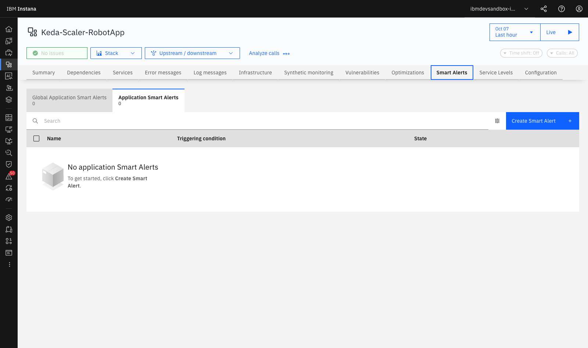
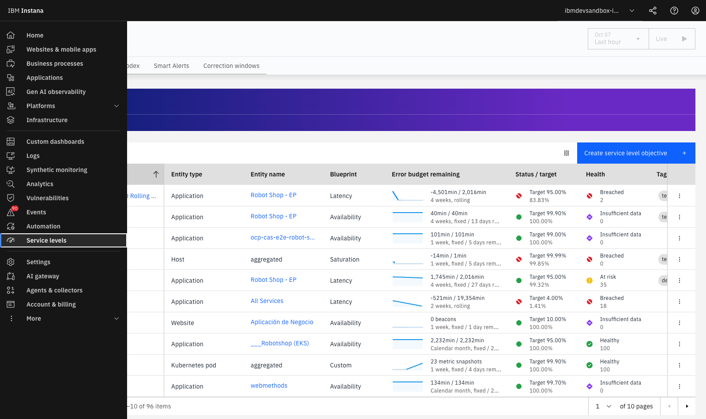
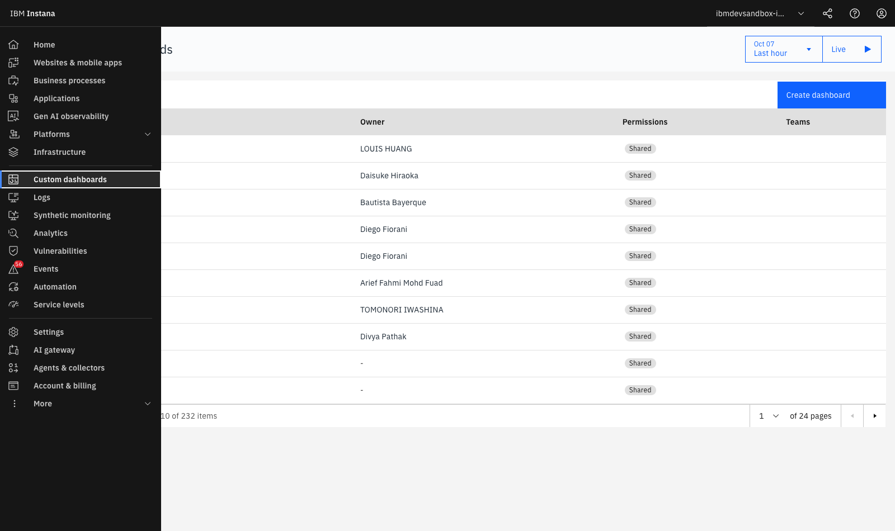

Lab 5 — SmartAlerts, SLOs y Custom Dashboards¶
LAB 5⏱ 15 minutos
1. Alertas Tradicionales vs SmartAlerts con IA¶
Las alertas estáticas basadas en umbrales fijos (ej. "avisar si CPU > 80%" o "avisar si latencia > 200ms") generan dos problemas graves:
- Falsos Positivos: Notificaciones innecesarias durante procesos batch nocturnos o picos esperados de tráfico.
- Falsos Negativos: No alertan si un servicio crítico cae a las 03:00 AM un domingo porque el umbral fijo estaba calculado para el tráfico diurno.
IBM Instana SmartAlerts resuelve esto mediante modelos de Machine Learning que aprenden el comportamiento normal de cada endpoint y servicio, incorporando estacionalidad diaria y semanal.
2. Configuración de un SmartAlert paso a paso¶
- Ve a Applications > Selecciona Keda-Scaler-RobotApp o Robot Shop - EP.
- Haz clic en la pestaña Smart Alerts:

Figura 5.1: Panel de SmartAlerts dentro de la aplicación con opciones para añadir alertas inteligentes basadas en blueprints.
El Asistente de Configuración (4 Pasos):¶
flowchart LR
S1["1. Select Blueprint"] --> S2["2. Define Scope"]
S2 --> S3["3. Threshold & Detection"]
S3 --> S4["4. Notification Channel"]
style S1 fill:#e0f2fe,stroke:#0284c7
style S2 fill:#f0fdf4,stroke:#16a34a
style S3 fill:#fef3c7,stroke:#d97706
style S4 fill:#fdf2f8,stroke:#db2777- Step 1 — Blueprints Predefinidos:
- Slow Calls (Latencia): Detección de degradación en percentiles P90, P95 o P99.
- Erroneous Calls (Tasa de fallos): Aumento anormal de respuestas 5xx o excepciones.
- Throughput Drop / Sudden Spike: Detección de caídas abruptas de clientes o sobrecargas inesperadas.
- HTTP Status Codes: Detección de códigos de estado concretos (ej. 401 Unauthorized o 429 Too Many Requests).
- Step 2 — Scope (Ámbito):
- Toda la aplicación (
All Services) o servicios críticos (payment,cart).
- Toda la aplicación (
- Step 3 — Threshold & Detection Method:
- Dynamic Baseline (IA): El algoritmo ajusta automáticamente la banda de tolerancia estadística según la hora y día de la semana.
- Static Threshold: Umbral fijo si existe un SLA contractual estricto (ej. > 300 ms).
- Step 4 — Alert Channels:
- Envío instantáneo a Slack, Microsoft Teams, Webhook, ServiceNow, PagerDuty, Splunk On-Call o Email.
3. Gestión de Service Level Objectives (SLOs) y Error Budgets¶
- En el menú superior de la aplicación, haz clic en la pestaña Service levels (o SLOs):

Figura 5.2: Panel de Service Levels (SLOs) monitorizando el cumplimiento de objetivos y el consumo de Error Budget.
Conceptos Clave de SRE en Instana:¶
- Service Level Indicator (SLI): La métrica técnica medida (ej. latencia de
GET /cart< 100 ms). - Service Level Objective (SLO): El objetivo comprometido con el negocio (ej. 99.5% de transacciones rápidas en una ventana móvil de 7 días).
- Error Budget (Presupuesto de Error): El margen de fallos tolerado (100% - 99.5% = 0.5%).
- Burn Rate: La velocidad a la que se consume el presupuesto. Si el Burn Rate supera 14.4x, Instana alerta de que el presupuesto de error del mes se agotará en las próximas 2 horas si no se mitiga la incidencia.
4. Construcción de Custom Dashboards¶
- En el menú lateral izquierdo, haz clic en Custom dashboards:

Figura 5.3: Catálogo de cuadros de mando personalizados compartidos entre equipos de desarrollo y operaciones.
- Creación de un Cuadro de Mando Ejecutivo:
- Haz clic en Create dashboard.
- Asigna el título:
Executive Dashboard - E-Commerce Health. -
Añade widgets interactivos combinando métricas:
- Time-Series Chart: Throughput global y curva de latencia P95.
- Single Big Metric (KPI): Porcentaje de disponibilidad general (99.98%).
- Top List Widget: Top 5 microservicios con mayor tiempo de respuesta.
- Infrastructure Heatmap: Mapa de saturación de CPU/Memoria en los nodos Kubernetes.
5. Resumen y Checklist del Lab 5¶
Al finalizar este laboratorio, has adquirido las competencias para:
 Configurar SmartAlerts basadas en blueprints predefinidos con modelos de Dynamic Baseline.
Configurar SmartAlerts basadas en blueprints predefinidos con modelos de Dynamic Baseline.- Definir y monitorizar Service Level Objectives (SLOs), SLIs y consumo de Error Budgets.
- Comprender la métrica de Burn Rate para prevenir violaciones de acuerdos de nivel de servicio (SLAs).
- Construir Custom Dashboards ejecutivos y operativos combinando KPIs de negocio e infraestructura.